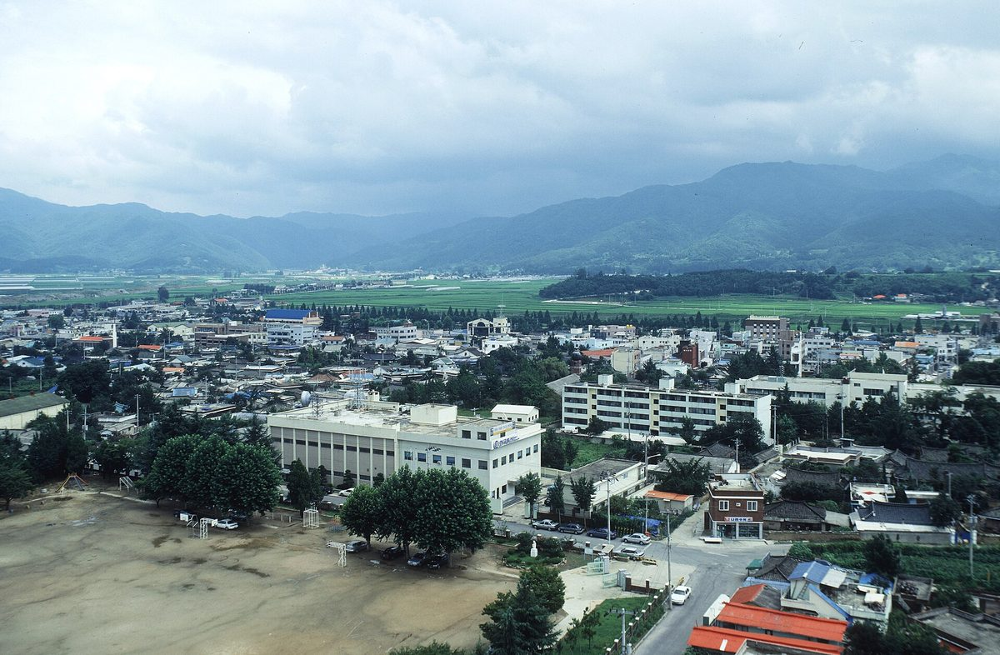

곡성군, SK이터닉스·유선기업과 육상풍력·태양광 협약…군민펀드 도입 검토

기업은 사업 개발·입지, 군은 행정 지원 맡기로…발전용량·사업비·부지·수익 배분 방식은 아직 정해지지 않아
곡성군이 SK이터닉스, 유선기업과 손잡고 군 일대에서 육상풍력과 태양광 발전사업을 추진한다. 군과 두 기업은 20일 군청에서 재생에너지 발전사업 협력 업무협약을 맺었으며, 협약식에는 조상래 곡성군수와 김해중 SK이터닉스 대표이사, 안순식 유선기업 대표이사 등 10명이 참석했다. 협약에 따라 SK이터닉스는 사업 개발과 운영관리를, 유선기업은 지역 안 입지 개발을 맡고, 군은 행정 지원으로 사업 기반을 마련한다. 군은 발전 성과가 주민 소득으로 이어지도록 군민이 투자자로 참여하는 군민펀드 도입을 검토하고 있다. 다만 발전용량과 총사업비, 예정 부지는 공개되지 않았고, 군민펀드의 투자 조건과 수익 배분 방식도 아직 정해지지 않았다.
시민에너지 관점
협약 단계에서 군민펀드를 먼저 꺼낸 것은 반가운 일이지만, 발전용량도 사업비도 정해지지 않은 지금이 오히려 주민 몫을 정할 때다. 펀드가 정해진 이자만 받는 투자 상품에 그치면 주민은 사업의 주인이 아니라 돈을 빌려준 사람으로 남는다. 네덜란드 노르트브라반트주는 15MW 이상 풍력 단지 개발사에 지역 소유 50%를 추진하고 그 노력을 입증하게 하며, 인허가 신청 전에 지역 에너지협동조합과 먼저 만나도록 했다. 곡성군도 부지와 용량을 확정하기 전에 주민 지분 비율과 의사결정 참여 방식을 다음 단계의 조건으로 공개해야 한다.
출처: 천지일보 2026-10-21 김도은 원문 보기
谷城郡、SKエターニックス・ユソン企業と陸上風力・太陽光で協約…郡民ファンドの導入を検討
企業が事業開発と立地を、郡が行政支援を担う…発電容量・事業費・用地・収益配分の方法はまだ決まらず
全羅南道谷城（コクソン）郡が、SKエターニックス、ユソン企業と手を組み、郡内で陸上風力と太陽光の発電事業を進める。郡と両社は20日、郡庁で再生可能エネルギー発電事業の協力に関する業務協約を結び、協約式にはチョ・サンレ谷城郡守、キム・ヘジュンSKエターニックス代表理事、アン・スンシク・ユソン企業代表理事ら10人が出席した。協約により、SKエターニックスは事業開発と運営管理を、ユソン企業は地域内の立地開発を担い、郡は行政支援で事業の基盤を整える。郡は発電の成果が住民の所得につながるよう、郡民が投資家として参加する「郡民ファンド」の導入を検討している。ただし発電容量や総事業費、予定地は公表されておらず、郡民ファンドの投資条件や収益配分の方法もまだ決まっていない。
市民エネルギーの視点
協約の段階で郡民ファンドを打ち出したことは歓迎すべきだが、発電容量も事業費も決まっていない今こそ、住民の取り分を決めるべき時だ。ファンドが決まった利息を受け取るだけの投資商品にとどまれば、住民は事業の所有者ではなく、お金を貸した人にすぎなくなる。オランダの北ブラバント州は15MW以上の風力発電所の開発事業者に地域所有50%を目指させ、その努力を立証させており、許認可申請の前に地域のエネルギー協同組合と会うよう求めている。谷城郡も用地と容量を確定する前に、住民の持ち分比率と意思決定への参加方法を次の段階の条件として公開すべきだ。
出典: Cheonji Ilbo (Newscj) 2026-10-21 Kim Do-eun 原文を読む
谷城郡与SK Eternix、Yuseon企业签署陆上风电和太阳能协议，研究引入郡民基金
企业负责项目开发和选址，郡政府提供行政支持；装机容量、项目费用、用地和收益分配方式尚未确定
全罗南道谷城郡将与SK Eternix、Yuseon企业合作，在郡内推进陆上风电和太阳能发电项目。郡政府与两家企业于20日在郡厅签署了可再生能源发电项目合作业务协议，谷城郡守Jo Sang-rae、SK Eternix代表理事Kim Hae-jung、Yuseon企业代表理事Ahn Sun-sik等10人出席了签约仪式。根据协议，SK Eternix负责项目开发和运营管理，Yuseon企业负责当地选址开发，郡政府则以行政支持打下项目基础。郡政府正在研究引入让郡民作为投资者参与的"郡民基金"，使发电成果转化为居民收入。不过，装机容量、总投资和预定用地均未公开，郡民基金的投资条件和收益分配方式也尚未确定。
市民能源视角
在签约阶段就提出郡民基金值得欢迎，但正是在装机容量和项目费用都还没定的现在，才最应该确定居民的份额。如果基金只是领取固定利息的投资产品，居民就只是借钱给项目的人，而不是项目的主人。荷兰北布拉班特省要求15MW以上风电场的开发商争取50%的本地所有权并证明所作努力，还要求其在申请许可之前先与当地能源合作社接触。谷城郡也应在确定用地和容量之前，把居民持股比例和参与决策的方式作为下一阶段的条件公开出来。
来源: Cheonji Ilbo (Newscj) 2026-10-21 Kim Do-eun 查看原文
Gokseong signs onshore wind and solar pact with SK Eternix and Yuseon, weighs a residents' fund
Companies to handle development and siting, county to provide administrative support; capacity, cost, sites and profit-sharing not yet set
Gokseong County in South Jeolla Province will pursue onshore wind and solar projects across the county with SK Eternix and Yuseon Enterprise. The county and the two companies signed a cooperation agreement on renewable power projects at the county office on the 20th, attended by about 10 people including County Governor Jo Sang-rae, SK Eternix CEO Kim Hae-jung and Yuseon CEO Ahn Sun-sik. Under the agreement, SK Eternix will handle project development and operations, Yuseon will develop sites locally, and the county will provide administrative support. The county is considering a residents' fund through which locals could invest in the projects so that the returns turn into household income. However, capacity, total cost and planned sites have not been disclosed, and the fund's investment terms and profit-sharing method have not been decided.
Citizen Energy View
Raising a residents' fund at the agreement stage is welcome, but now, before capacity and cost are fixed, is exactly the time to settle residents' share. If the fund is just an investment product paying a set rate, residents remain lenders rather than owners. The Dutch province of Noord-Brabant requires developers of wind farms of 15MW or more to pursue 50% local ownership and prove their efforts, and to meet local energy cooperatives before applying for permits. Gokseong should likewise publish residents' equity share and their role in decisions as conditions for the next stage, before sites and capacity are locked in.
Source: Cheonji Ilbo (Newscj) 2026-10-21 Kim Do-eun Read the original